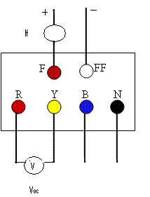

This curve shows the effect of variation in Load current over B-H loop. The load current changes with external resistance. The initial value of resistance is high and BH loop seems as a straight line. When we decrease resistance,the current value increases and as a result the thickness of B-H loop increases.
